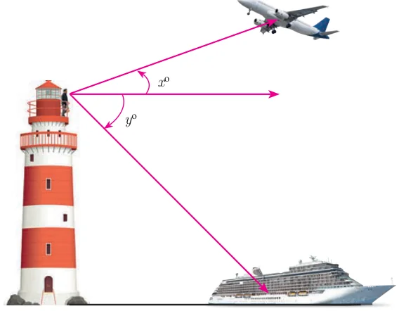
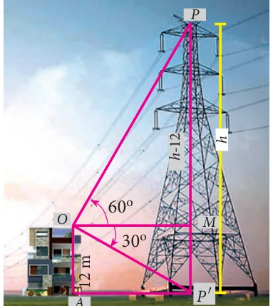
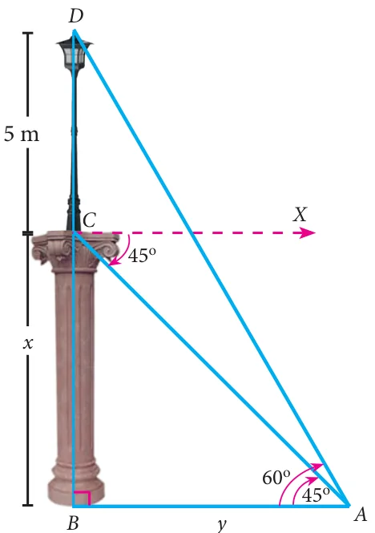
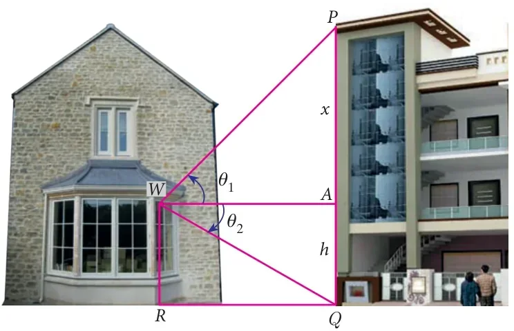

Let us consider the following situation.

A man standing at a top of lighthouse located in a beach watch on aeroplane flying above the sea. At the same instant he watch a ship sailing in the sea. The angle with which he watch the plane correspond to angle of elevation and the angle of watching the ship corresponding to angle of depression. This is one example were one oberseves both angle of elevation and angle of depression.
In the Fig. 6.26, \(x^\circ\) is the angle of elevation and \(y^\circ\) is the angle of depression.
In this section, we try to solve problems when Angles of elevation and depression are given.
Example 6.31
From the top of a 12 m high building, the angle of elevation of the top of a cable tower is 60° and the angle of depression of its foot is 30°. Determine the height of the tower.
Solution

As shown in Fig. 6.27, \(OA\) is the building, \(O\) is the point of observation on the top of the building \(OA\). Then, \(OA = 12\) m.
\(PP'\) is the cable tower with \(P\) as the top and \(P'\) as the bottom.
Then the angle of elevation of \(P\), \(\angle MOP = 60^\circ\).
And the angle of depression of \(P'\), \(\angle MOP' = 30^\circ\).
Suppose, height of the cable tower \(PP' = h\) metres.
Through \(O\), draw \(OM \perp PP'\)
\(MP = PP' - MP' = h - OA = h - 12\)
In the right angled \(\Delta OMP\), \(\dfrac{MP}{OM} = \tan 60^\circ\)
\(\Rightarrow \dfrac{h - 12}{OM} = \sqrt{3}\)
\(OM = \dfrac{h - 12}{\sqrt{3}} \quad \ldots(1)\)
In the right angled \(\Delta OMP'\), \(\dfrac{MP'}{OM} = \tan 30^\circ\)
\(\Rightarrow \dfrac{12}{OM} = \dfrac{1}{\sqrt{3}}\)
\(OM = 12\sqrt{3} \quad \ldots(2)\)
From (1) and (2) we have, \(\dfrac{h - 12}{\sqrt{3}} = 12\sqrt{3}\)
\(\Rightarrow h - 12 = 12\sqrt{3} \times \sqrt{3}\) we get, \(h = 48\)
Hence, the required height of the cable tower is 48 m.
Example 6.32
A pole 5 m high is fixed on the top of a tower. The angle of elevation of the top of the pole observed from a point ‘\(A\)’ on the ground is 60° and the angle of depression to the point ‘\(A\)’ from the top of the tower is 45°. Find the height of the tower. (\(\sqrt{3} = 1.732\))
Solution

Let \(BC\) be the height of the tower and \(CD\) be the height of the pole.
Let ‘\(A\)’ be the point of observation.
Let \(BC = x\) and \(AB = y\).
From the diagram,
\(\angle BAD = 60^\circ\) and \(\angle XCA = 45^\circ = \angle BAC\)
In the right angled \(\Delta ABC\), \(\tan 45^\circ = \dfrac{BC}{AB}\)
\(\Rightarrow 1 = \dfrac{x}{y} \Rightarrow x = y \quad \ldots(1)\)
In the right angled \(\Delta ABD\), \(\tan 60^\circ = \dfrac{BD}{AB} = \dfrac{BC + CD}{AB}\)
\(\Rightarrow \sqrt{3} = \dfrac{x + 5}{y} \Rightarrow \sqrt{3}\,y = x + 5\)
we get, \(\sqrt{3}\,x = x + 5\) [From (1)]
\(x = \dfrac{5}{\sqrt{3} - 1} = \dfrac{5}{\sqrt{3} - 1} \times \dfrac{\sqrt{3} + 1}{\sqrt{3} + 1} = \dfrac{5(1.732 + 1)}{2} = 6.83\)
Hence, height of the tower is 6.83 m.
Example 6.33
From a window (\(h\) metres high above the ground) of a house in a street, the angles of elevation and depression of the top and the foot of another house on the opposite side of the street are \(\theta_1\) and \(\theta_2\) respectively. Show that the height of the opposite house is \(h\left(1 + \dfrac{\cot\theta_2}{\cot\theta_1}\right)\).
Solution
Let \(W\) be the point on the window where the angles of elevation and depression are measured. Let \(PQ\) be the house on the opposite side.

Then \(WA\) is the width of the street.
Height of the window \(= h\) metres
\(= AQ \quad (WR = AQ)\)
Let \(PA = x\) metres.
In the right angled \(\Delta PAW\), \(\tan\theta_1 = \dfrac{AP}{AW}\)
\(\Rightarrow \tan\theta_1 = \dfrac{x}{AW}\)
\(AW = \dfrac{x}{\tan\theta_1}\)
we get, \(AW = x\cot\theta_1 \quad \ldots(1)\)
In the right angled \(\Delta QAW\), \(\tan\theta_2 = \dfrac{AQ}{AW}\)
\(\Rightarrow \tan\theta_2 = \dfrac{h}{AW}\)
we get, \(AW = h\cot\theta_2 \quad \ldots(2)\)
From (1) and (2) we get, \(x\cot\theta_1 = h\cot\theta_2\)
\(\Rightarrow x = h\,\dfrac{\cot\theta_2}{\cot\theta_1}\)
Therefore, height of the opposite house \(= PA + AQ = x + h = h\,\dfrac{\cot\theta_2}{\cot\theta_1} + h = h\left(1 + \dfrac{\cot\theta_2}{\cot\theta_1}\right)\)
Hence Proved.
Thinking Corner
What is the minimum number of measurements required to determine the height or distance or angle of elevation?
Progress Check
- The line drawn from the eye of an observer to the point of object is \(\underline{\qquad\qquad}\).
- Which instrument is used in measuring the angle between an object and the eye of the observer?
- When the line of sight is above the horizontal level, the angle formed is \(\underline{\qquad\qquad}\).
- The angle of elevation \(\underline{\qquad\qquad}\) as we move towards the foot of the vertical object (tower).
- When the line of sight is below the horizontal level, the angle formed is \(\underline{\qquad\qquad}\).